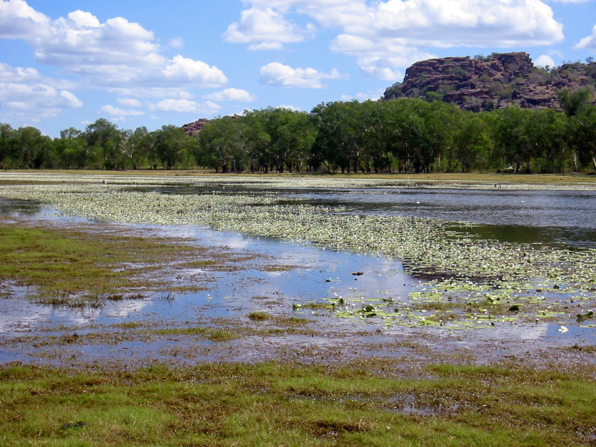
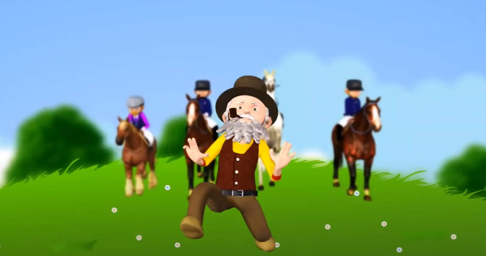
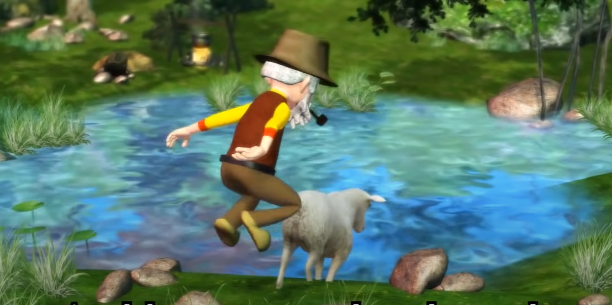

"an Australian term for an oxbow lake, an isolated crescentic pond left behind after a river loop is cut off when the river channel changes course.[1] Billabongs are usually formed when the path of a creek or river changes due to bank erosion, leaving the former channel deprived of further inflow and becoming a dead-end gully holding only residual water that has not yet drained or evaporated. As a result of the arid climate of many parts of Australia, these "dead rivers" often fill with water seasonally but can be dry for a greater part of the year." says Wikipedia.
Wikipedia article Source: Wikipedia
write songs like "Waltzing Matilda" by Banjo Paterson. This song was remade by MuffinSongs on youtube and is still the most legendary and popular version of them all. The Lyrics are following: Once a jolly swagman camped by a billabong. Under the shade of a coolibah tree, and he sang as he watched and waited till his "Billy" boiled, "You'll come a-waltzing Matilda, with me." Waltzing Matilda, waltzing Matilda, you'll come a-waltzing Matilda, with me, and he sang as he watched and waited till his "Billy" boiled, "You'll come a-waltzing Matilda, with me." Down came a jumbuck to drink at that billabong, up jumped the swagman and grabbed him with glee, and he sang as he shoved that jumbuck in his tucker bag, "You'll come a-waltzing Matilda, with me." Up rode the squatter, mounted on his thoroughbred. Down came the troopers, one, two, and three. "Whose is that jumbuck[c] you've got in your tucker bag? You'll come a-waltzing Matilda, with me." Up jumped the swagman and sprang into the billabong. "You'll never catch me alive!" said he. And his ghost may be heard as you pass by that billabong:"You'll come a-waltzing Matilda, with me.""
Images from the music Video of Waltzing Matilda by MuffinSongs:
  MuffinSongs Waltzing Matilda Youtube